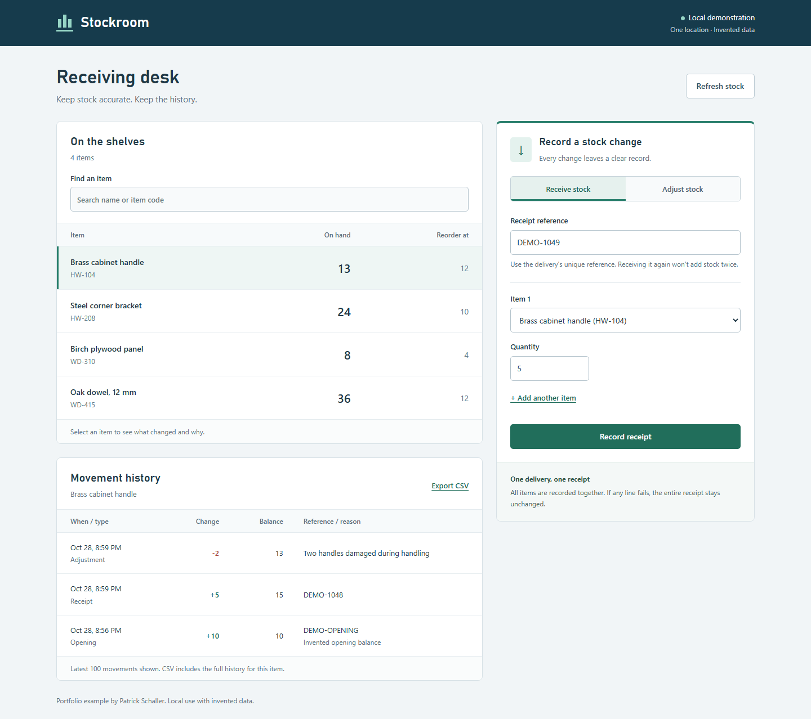

API design meets an everyday business app
Inventory Receiving
A React receiving desk backed by an ASP.NET Core API. Receive stock, correct a count, and answer the inevitable “wait, did we already enter that?”
The interesting bit: a retry returns the original receipt. A changed payload gets a clear conflict. Neither quietly adds extra stock.
- ASP.NET Core
- REST API
- OpenAPI
- React / TypeScript
- SQLite
What’s worth a closer look?
Transactions keep receipt lines together. The generated OpenAPI contract describes request constraints and Problem Details responses. Stock corrections require the version the caller read; stale updates return 409.
Independent local demo with invented stock. The hosted API explorer is read-only; request execution runs in the local app.
